等到开学就是期末考试了，这课从头到尾就根本没有听过，属于是要寄了。
得，开始恶补。
x86和x64，IA-32
x86指的是Intel在8086/8088之后的一系列后向兼容的指令集，也就是IA-32(Intel Architecture,32 bit)。
工作模式
IA-32指令集支持三种基本的工作模式：保护模式(protected mode)，实模式(real-address mode)和系统管理模式(system management mode, SMM)。
IA-32指令集属于CISC(Complex Instruction Set Computer)体系结构。
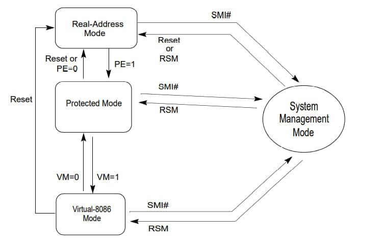
这张图里面本来还包含x64的IA-32e模式的，因为这里涉及不到就删去了。
保护模式
保护模式是处理器的默认模式。
这种模式下能在受保护的多任务环境中直接执行“实地址模式”8086 软件（Among the capabilities of protected mode is the ability to directly execute “real-address mode” 8086 software in a protected, multi-tasking environment.）。
这个特性被称为虚拟8086模式(virtual-8086 mode)。（也就是说IA-32处理器有两种方式来运行编译在Intel 8086处理器上面的程序，分别是虚拟8086模式和实模式），这个也被称作是quasi-opertaion mode，因为不算是单独的一类模式嘛。
在保护模式下，处理器支持虚拟内存、分页等功能，也能提供更好的多任务性能。目前主流的操作系统都是运行在这个模式下。
实模式/实地址模式
实模式实现了经过扩展的8086处理器的环境（This mode implements the programming environment of the Intel 8086 processor with extensions），能够切换至保护模式或系统管理模式。
实模式下只支持16位的寄存器，也就是只有20位的寻址空间（16+4）即1MB的内存空间。
在加电或者重置后，处理器处于实模式。
系统管理模式
系统管理模式能够给与操作系统或者程序一个透明的机制来实现基于平台的功能，如电源管理、系统安全等（This mode provides an operating system or executive with a transparent mechanism for implementing platform-specific functions such as power management and system security.）。
系统管理模式只能够通过系统管理中断(System Management Interrupt, SMI)或者触发外部SMM中断引脚(SMI#)进入。
字节序
字节序：多字节数据在计算机中存储或者传输的顺序。
小端序(little endian)：低位字节存储在内存中的低位地址。（Intel CPU）
大端序(big endian)：低位字节存储在内存中的高位地址。（一些RISC指令集CPU）
1 | a=0x61626364 |
大概就是这种差别。
权限级别
为了提高操作系统的可靠性，IA-32指令集架构有四个权限级别，分别是ring 0~3，数字越低级别越高。
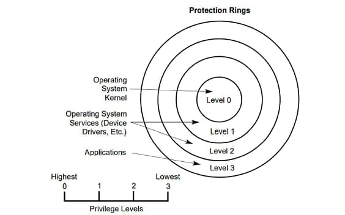
最高的权限Ring 0一般是系统最关键模块的代码段（主要是操作系统的内核等），Ring 1和Ring 2使用较少，一般是操作系统的一些服务和驱动等。用户态的程序一般运行在权限最低的Ring 3。
较低权限段上面的代码模块要访问更高权限的代码段需要经过一个严格控制和保护的接口，也就是gate（不知道怎么翻译）。如果一个程序没有足够的权限而经过gate访问更高权限的代码段，则会产生一个一般保护异常(general-protection exception, #GP)。
IA-32 内存
草，有一说一，Intel的架构开发手册比老师的幻灯片讲得清楚多了……
插在处理器总线上面的内存其实叫做記憶體也挺好的，把硬盘叫做硬碟这样子就没人会搞混了就是物理内存(physical
memory)，物理内存是由8比特的字节组合而成的，每个字节都有一个唯一的地址也就是物理地址(physical
address)。对于不支持64位架构的处理器，物理内存空间(physical
address
space)范围是从0开始到236-1(64GB)(段寻址4+寄存器32)。
呃，这边有个小小的问题。实际上如果只有32位地址的话，最大的寻址空间应该是232也就是我们常见认知的4GB，但是如果启用了物理地址扩展(Physical Address Extension,PAE)的话，是可以访问超过4GB的物理内存的。
实际上，任何使用IA-32处理器的操作系统或者外部程序都使用处理器的内存管理设备(memory management facilities)来访问内存。内存管理设备提供了分段和分页等功能，以提供更高的效率和可靠性。
IA-32内存模型
运行在IA-32处理器上的程序通过内存管理设备访问内存，也就是不直接去访问内存。有几种常见的内存分配模型：
平面内存模型(flat memory model)
平面内存模型中内存是单独一段的连续的地址空间。这个地址空间也被叫做线性地址空间(linear address space)。代码、数据和栈都在这个空间内，这个空间按照字节来寻址，其中的一个地址就是线性地址(linear address)。
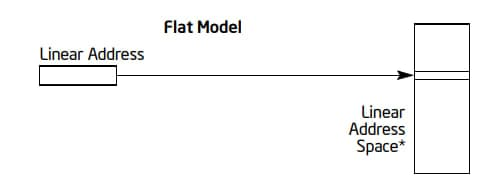
草，原来老师也是从这里面截的图……
分段内存模型(segmented memory model)
在分段内存空间中，一个程序的内存地址被分为了若干段，代码、数据、栈等都分别存储在各自的段内。一个程序使用逻辑地址来编址一个段中的字节数据，这个地址包括了一个段基址和一个相对于基址的偏移。每个段可以有232字节的大小。而在处理器内部，所有的段都被映射到处理器的线性地址空间，对于某个内存位置的访问都由处理器内部转换完成，这些过程对程序是透明的。
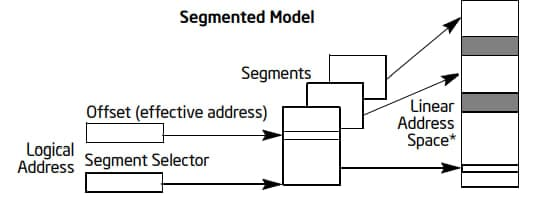
实模式地址模型(Real-Address mode memory model)
这个模式用于8086处理器，用来支持运行在8086处理器上面的程序。实模式下使用一个特殊的段内存接口，程序的线性地址由一系列64KB的段构成。这个模式下线性地址空间的最大大小是220字节。
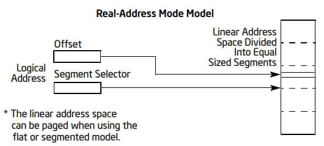
不同运行模式下的内存模型
对于保护模式下的CPU，上面的三种内存模型都是可以被使用的，而其中，实模式地址模型一般是用在虚拟8086模式下。具体模型的选取取决于实际运行的操作系统，而对于多任务，不同的任务可以采用不同的地址模型。
实模式仅仅能够使用实地址模型。
对于系统管理模式，处理器会使用一个独立的地址空间系统管理RAM(system management RAM, SMRAM)。SMRAM的编址方式和实模式类似。
内存管理
实模式
在实模式下，处理器直接使用segment selector来形成地址。处理器将段选择器segment selector左移4位形成20bit的基址，并将其和偏移值相加得到物理地址。如图所示。
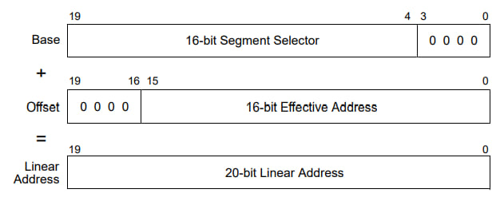
举个例子，如果segment selector数据为0x1234，偏移为0x5678，那么实际得到的地址就是0x12340+0x5678=0x179B8。
这里有个问题，这种计算可以使得结果超出20bit的地址长度，在8086处理器中，超出的部分会被截断。但是在实模式下，超出的部分不会被截断，这一部分仍然会被用作物理地址。在Intel 486之后的处理器中，实模式下的A20#信号用来作为地址A20的掩码，来形成8086的截断20bit地址总线的效果。
保护模式
IA-32的内存管理设备分为两个部分：分段和分页。分段可以隔离程序的代码、数据和栈，而分页则为按需分页的使用虚拟内存的操作系统提供执行环境。分页功能是可以被关闭的，但是分段不能，没办法关掉分段。
图就是IA-32的分页和分段机制。
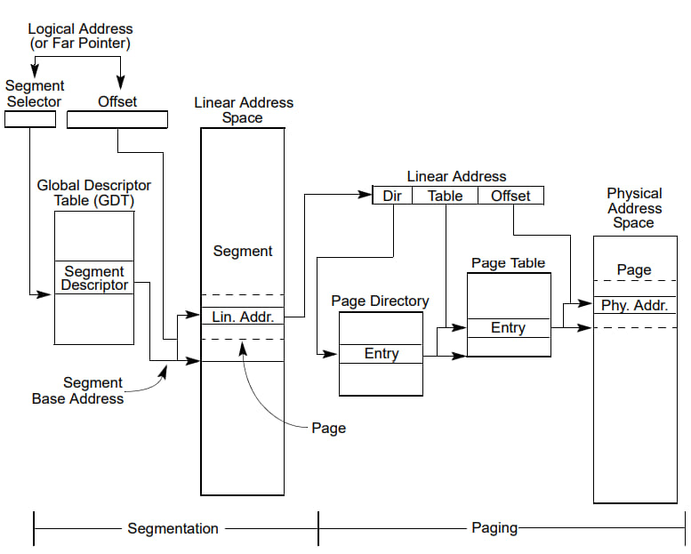
分段机制让处理器的线性地址空间划分称了若干个小的地址段，如果处理器上有多个程序在运行，那么每个程序都会被分配到自己的一系列段，同时处理器也会保证不同程序之间的段不会相互影响。分段机制也可以标识不同段的类别（代码、数据、栈等）来保证不同的段上做的是该做的事情。
这样子，系统中的所有段都分布在处理器的线性地址空间里面，为了去寻找某个段内的一个字节，我们需要一个逻辑地址(logical address, or far pointer)。逻辑地址包括了一个段选择器segment selector和一个偏移。段选择器是每个段唯一(unique)的标识符，它提供一个描述符表(descriptor table)，如GDT(global descriptor table，全局描述符表)或者上的偏移，指向了上面的一个段描述符(segment descriptor)的数据结构。
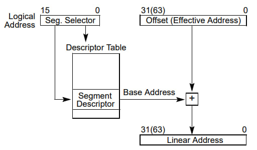
每个段都有一个自己的段描述符，包括了段的大小、访问权限和特权等级、类型和段线性基址（在线性地址空间中段第一个字节的地址）。
一个段的基址加上逻辑地址中的偏移也就构成了段上任意一个字节的地址。由此，我们可以完成段上的寻址，也就是图上左边逻辑地址到线性地址空间的寻址。在没有分页的情况下，线性地址空间是直接映射到物理地址空间的，我们可以直接使用线性地址空间的地址去访问地址总线。
分页部分课纲里面没有，之后单独拿出来说。
IA-32 寄存器
IA-32指令集下，用于基本的程序执行的寄存器分为四个类型：
- 通用寄存器(general-purpose registers)
- 段寄存器(segment registers)
- 程序状态和控制寄存器(program status and control register, EFLAGS register)
- 指令指针寄存器(instruction pointer register, EIP register)
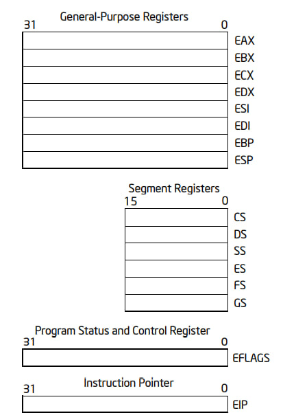
除这些之外，还有用于控制、调试、系统表指针、FPU等的寄存器。
通用寄存器
通用寄存器包括了EAX，EBX，ECX，EDX，ESI，EDI，EBP，ESP。它们可以用于逻辑和算数运算、地址运算和作为内存指针。
但是其中，ESP寄存器一般是作为栈指针使用的，不该用于其他的用途。
同时，许多指令是针对特定的寄存器进行操作的。如字符串操作使用的是ECX、ESI和EDI作为操作数。一些指令假定某个寄存器中就是需要的指针，比如EBX常被假定里面存放了DS段的内存地址指针。
- EAX：累加器的操作数和结果
- EBX：指向DS段中数据的指针
- ECX：字符串计数器和循环的计数器
- EDX：I/O指针
- ESI：指向DS寄存器标识的段中数据的指针；字符串操作的源指针
- EDI：指向ES寄存器标识的段中数据或者目的地址的指针；字符串操作的目的指针
- ESP：栈顶指针
- EBP：栈基指针
通用寄存器实际上的可以分割的，如图所示：
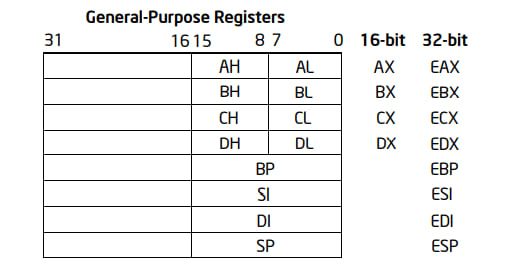
通过对寄存器的分割，可以实现更加高效的利用。
其实从之前微原实验手搓8086汇编的经历来看，真的是寄存器之间和炒菜一样来回倒腾，一个寄存器当两个用，放不下了还要往栈里面硬塞，对比来看MIPS优雅多了（
段寄存器
段寄存器存放的就是16bit的段选择器。它们的使用方式取决于操作系统的内存模型。
如果操作系统使用的是平面内存模型，那么段寄存器重叠指向线性地址空间的0的位置。
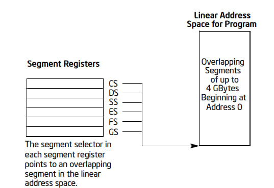
不过这种情况通常来说，能把内存分为两个段，代码段和数据、栈段。CS段寄存器指向代码段，剩下的所有段寄存器指向数据和堆栈段。
而当使用了分段模型，每一个段寄存器都包含了不同的段选择器，以此标识了线性地址空间中不同的段的地址。一个程序可以同时访问线性地址空间中的6个段，但是如果要访问不在段寄存器内的段，则要提前装载对应的寄存器。
CS寄存器包含了代码段(code segment)的段选择器。代码段中存储了程序的指令，处理器使用一个包含了CS中的段选择器和EIP寄存器的值的逻辑地址去获取将要执行的指令。
DS、ES、FS、GS四个寄存器指向四个数据段(data segment)。
SS寄存器是包含了栈段(stack segment)的段选择器。
EFLAGS寄存器
EFLAGS寄存器有32bit，包含了状态、控制和一系列系统信息的标志。如图所示：
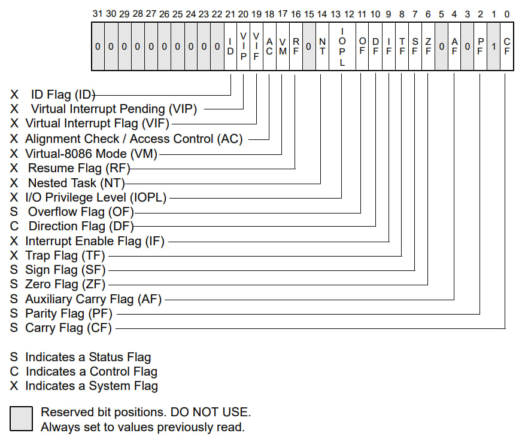
下面是一些标志位的详细作用：
状态标志：
- CF: 进位标志。如果运算进位或者借位，那么设置这个标识符。这个标志位可以提示无符号整数溢出（set as 1），在多精度运算中也有使用。
- PF: 奇偶标志。如果运算结果是偶数，置为1，否则置0。（置为LSB取反）
- AF: 辅助进位标志。用于BCD计算。
- ZF: 零标志。如果结果为0则置1，否则置0。
- SF: 符号标志。如果结果为正数，置为0，否则置为1。（置为MSB）
- OF: 溢出标志。向上或向下溢出则置为1，否则为0。用于有符号整数运算。
DF标志：用于字符串操作，设置为1即从高地址向低地址，反之亦然。
系统标志位和IOPL域：
- TF: 陷阱标志。在单步调试下设置为1，否则为0。
- IF: 中断使能。在设置为1时会对可屏蔽中断响应。
- IOPL: I/O特权等级域。标识当前运行的程序的I/O特权等级，这个值应该大于等于当前程序的CPL(current privilege level)。
- NT: 嵌套任务。用于中断的嵌套和任务调用嵌套。
- RF: 恢复标志。控制处理器对调试终端的响应。
- VM: 虚拟8086模式标志。设置之后启用虚拟8086模式。
- AC: 对齐检查或者访问控制。
- VIF: 虚拟中断。
- VIP: 虚拟中断挂起。
- ID: 标识符位。用于CPUID指令。
EIP寄存器
EIP寄存器包含了当前代码段下一条需要执行的指令的偏移。通过一些流程控制语句、中断和异常语句，可以控制EIP的值。但是软件不能够直接获取到自己的EIP的值。
基本的数据类型
IA-32基本的数据类型分为字节(byte, 8 bit)、字(word, 16 bit)、双字(dword, 32 bit)、四字(qword, 64 bit)、双四字(double qword, 128 bit)等：
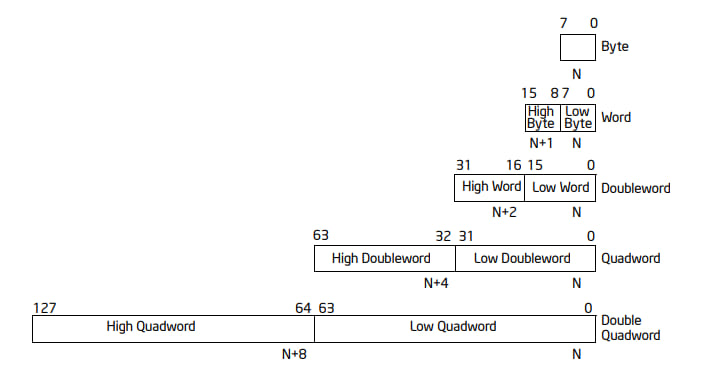
在内存中，数据以这样的小端序存储：
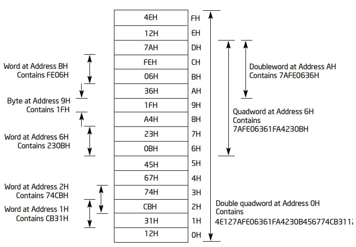
在实际使用中，程序为了提高性能，一般采用对齐的方式存储数据。
数字类型
一些指令支持特殊的数据类型，包括整数（有符号的和无符号的）和浮点数（32 bit单精度、64 bit双精度），它们的结构如图所示：
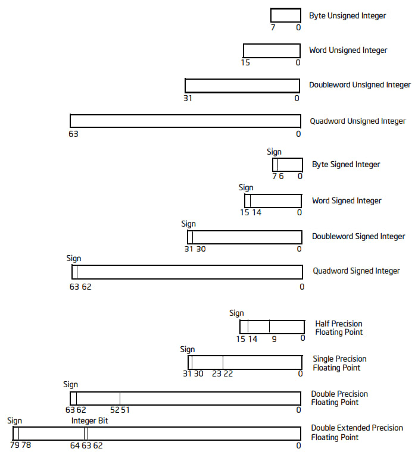
浮点数实际上是遵循IEEE 754标准，这里不加赘述，有需要以后再写。
指针类型
指针是内存中的地址。在非64位的模式中，指针分为近指针(near pointer)和远指针(far pointer).
近指针是32bit长度的段上偏移（有效地址），一般在平面内存模型或者已经明确了某一个段的情况下使用。而远指针是一个逻辑地址，包含了一个16 bit的段选择器，用于精确地访问某个地址。
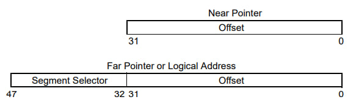
除了这些之外，还包括比特串、字符串等其他的类型。
总结
写得够呛，一边看幻灯片一边读Intel的手册，感觉还是Intel的手册好懂一些，就是太长了……
希望别坑了
参考资料
[1] 老师的课件。
[2] 《软件逆向工程——原理与实践》，孙聪 等著，西安电子科技大学出版社。
[3] 英特尔® 64 位和 IA-32 架构开发人员手册：卷 1。
[4] 英特尔® 64 位和 IA-32 架构开发人员手册：卷 3。